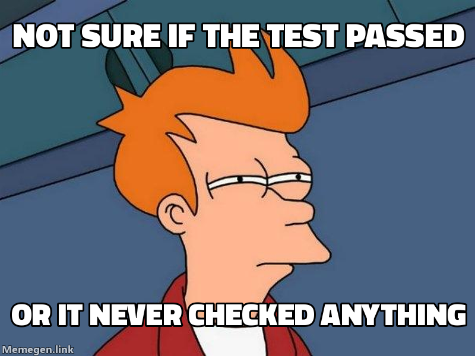

/gabe-red — the RED-commit beat
Why test-first never landed before, and the dedicated beat that lands it: a commit whose declared cases fail by assertion, born before any source is written.
/gabe-red is a lifecycle beat that runs after /gabe-plan and before any source is written: inspect the test corpus, declare the cases that make this change necessary, write them against a stub, run them, and commit the failure. Its deliverable is not a report — it's a commit whose declared cases fail by assertion. It is the first half of TDD, finally given a beat of its own.
01Why test-first never landed before
The operator asked for test-first development repeatedly, for a long time, and it never stuck. That failure was structural, not a discipline problem — and understanding the three reasons is most of understanding the fix.
- A beat asserts one terminal state; TDD has two contradictory ones. Every command in the suite ends by asserting a single state of the world — "the tests pass," "the diff is reviewed." But TDD needs two opposite terminal states of the same measurement: first the tests fail, then they pass. One command cannot honestly end with both. Inside a merged execute step, the red is swallowed by the same act that produced the green, so the only boundary anyone can observe is the green — which is self-graded evidence. A merged execute yields theatre by construction. The fix is a dedicated beat whose entire deliverable is the failing state.
- Every test signal had no reader. Each existing verification in the suite reads a file that already exists — commit counts, a diff's touched files, a path glob. A promised test had no such reader: a promise with nothing that consumes it is never actually written, and no reader is ever built to justify one.
/gabe-redbreaks the loop by giving the promise a schema slot (proof.type: test, aCases:line) and a reader (/gabe-executeplus the plan-proof guard). - Nothing owned test identity. Tests were the only durable artifact born with no command present — created inside a nameless "implement" step. Decisions get D-ids, deferred items get P-ids, phases get numbers; tests got nothing.
/gabe-redis the birth moment where a test gets its C-id.
02The deliverable is a commit that fails
Red isn't perishable — it's unaddressable. A failing test that flashes red in a terminal and is immediately made green leaves no trace anyone can point at later. Committing the failure gives it an address:
git commit -m "red(auth): C412 rejects expired token
RED: C412 fails by assertion on returning stub"Anyone can re-derive that failure months later — git worktree add … <red-sha> && pytest -k C412 — because the commit, not a memory, holds it. The RED: trailer is the machine-readable record that this checkpoint is a declared, honest failure.
03The three outcomes
When the new cases run against the stub, exactly one of three things is true — and only the first is evidence:
| Outcome | Meaning | What to do |
|---|---|---|
| Fails by assertion | The case ran, reached its assert, and the assert was false. | ✅ This is RED. Commit it. |
| Fails by import / collection | The test couldn't even load — a missing symbol, a syntax error. | ❌ NOT RED. This is non-evidence: it proves nothing about behavior. Fix the wiring first. |
| Passes on unchanged code | The case is green before you've built anything. | ⛔ TAUTOLOGY. Halt — the case asserts nothing the code doesn't already do. |

The stub the cases run against must return a value, never raise NotImplementedError. A raising stub makes every case look red for the same boring reason (the exception), which destroys the tautology guard — you can no longer tell a real assert False from a case that would have passed anyway. A returning stub lets a tautology surface as a green, so the guard can catch it.
04Refactors and the genuinely un-testable
A refactor has no new behavior to fail on, so demanding a fake red would be dishonest. Its contract is a guard instead: GUARD: C091, C147 — the named existing cases must stay green across the change. That's machine-checkable and honest, with no theatre. And a phase that genuinely cannot be tested (a pure config bump, a dependency pin) self-skips with an enumerated code recorded on the phase, rather than being forced through a ceremony that would produce a meaningless commit.
05What it costs, honestly
Verification level rides the phase's existing tier — there is no parallel level system. min_cases is 1 at MVP, 3–6 at Enterprise, plus fuzz/load at Scale. The honest price is +10–15% phase time at MVP, +20–30% at Enterprise — but most of that isn't new work, it's test-writing moved earlier. The one genuinely new cost is the corpus search that reuse demands — which is exactly the reuse discipline the operator wanted forced into the open, not a tax to apologize for.
/gabe-red exists to produce a failure a developer must fix, not a summary a developer reads. The day it starts printing ceremony instead of surfacing a real red, it has stopped earning its place — delete it. This is the verification-first tripwire made concrete.
- The C-id scheme — how the cases
/gabe-reddeclares earn durable, recoverable names. - Beats & commands — where red sits in the full lifecycle (beat 3, before execute).
- Design decisions — D1 (report-never-gate) and D6 (red-as-commit) ratify this beat's shape.